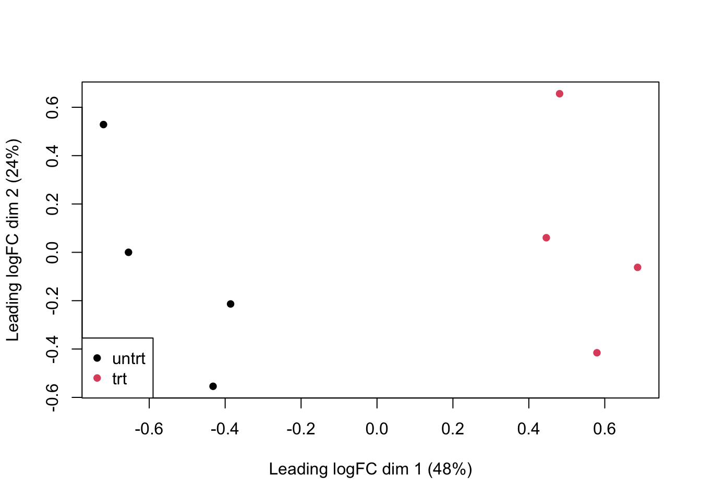
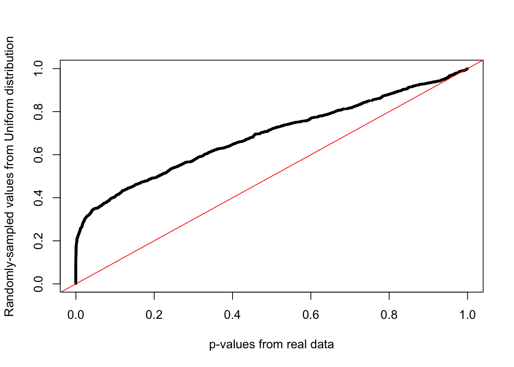
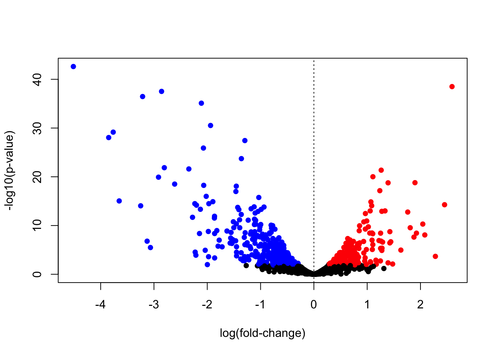
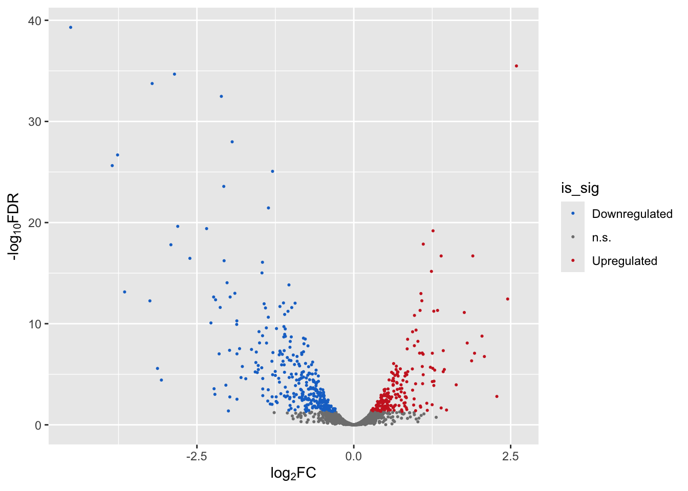
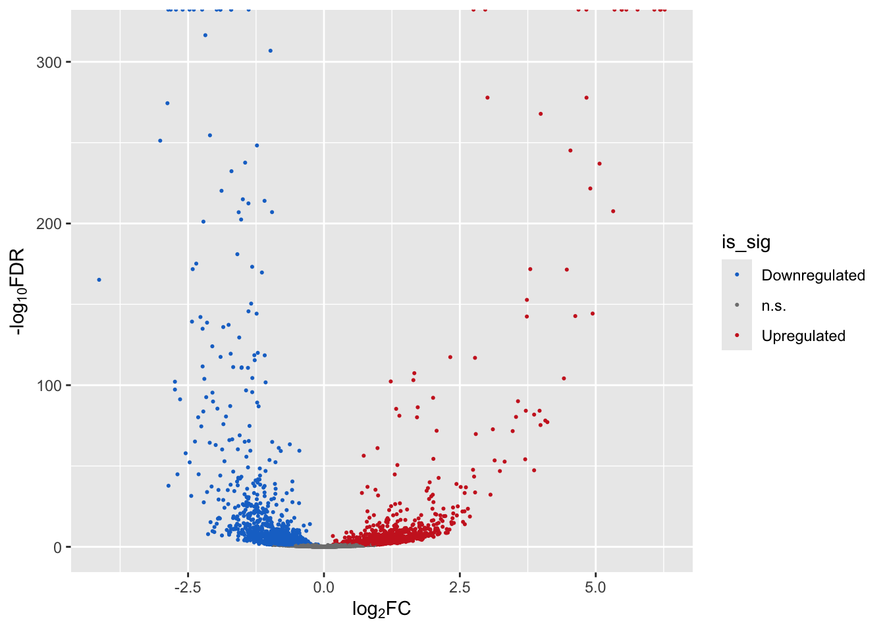

Module 4: Finding Differentially Expressed Genes From RNAseq Data
Lab
In this exercise, we will use edgeR to call differentially-expressed genes. For the example we will use an RNAseq dataset from a treatment-vehicle design.
If you haven’t already done so, install the airway dataset:
These data are from the paper:
Himes BE, Jiang X, Wagner P, Hu R, Wang Q, Klanderman B, Whitaker RM, Duan Q, Lasky-Su J, Nikolos C, Jester W, Johnson M, Panettieri R Jr, Tantisira KG, Weiss ST, Lu Q. “RNA-Seq Transcriptome Profiling Identifies CRISPLD2 as a Glucocorticoid Responsive Gene that Modulates Cytokine Function in Airway Smooth Muscle Cells.” PLoS One. 2014 Jun 13;9(6):e99625. PMID: 24926665.
From the abstract of the original paper: “Using RNA-Seq, a high-throughput sequencing method, we characterized transcriptomic changes in four primary human ASM cell lines that were treated with dexamethasone - a potent synthetic glucocorticoid (1 micromolar for 18 hours).”
Let’s load the data:
These data happen to be in a Bioconductor-specific format, so we use the special functions, assay() and colData() to get the expression data and sample information.
Questions:
- How many samples are in this experiment?
- How many genes were measured?
- How many treatment groups are there (
dexcolumn)?
Let’s created a DGEList object (DGE stands for “Differential Gene Expression”). This object is what we will use for our differential expression analysis.
Note: Make phenotype of interest categorical. In R that means converting to a factor type with categorical levels. You can think of levels as ordinal representations (e.g., first level = 1, second = 2, etc., )
If levels= are not set, the default uses alphabetical order. We recommend explicitly setting levels so that there are no assumptions.
Load the edgeR package:
Let’s create a DGEList object for the differential expression analysis. Note that group must be a categorical variable (use factor() to convert it to one):
Remove low-count genes: To filter low count genes, we’re going to use a normalized count measure called cpm (counts per million). We are going to keep genes with 100 or greater counts per million for at least two samples:
## SRR1039508 SRR1039509 SRR1039512 SRR1039513 SRR1039516
## ENSG00000000003 679 448 873 408 1138
## ENSG00000000005 0 0 0 0 0
## ENSG00000000419 467 515 621 365 587
## ENSG00000000457 260 211 263 164 245
## ENSG00000000460 60 55 40 35 78
## ENSG00000000938 0 0 2 0 1
## SRR1039517 SRR1039520 SRR1039521
## ENSG00000000003 1047 770 572
## ENSG00000000005 0 0 0
## ENSG00000000419 799 417 508
## ENSG00000000457 331 233 229
## ENSG00000000460 63 76 60
## ENSG00000000938 0 0 0Look at counts per million using cpm:
## SRR1039508 SRR1039509 SRR1039512 SRR1039513 SRR1039516
## ENSG00000000003 32.900521 23.817776 34.439705 26.906868 46.546998
## ENSG00000000005 0.000000 0.000000 0.000000 0.000000 0.000000
## ENSG00000000419 22.628193 27.379809 24.498347 24.071095 24.009743
## ENSG00000000457 12.598138 11.217747 10.375306 10.815506 10.021102
## ENSG00000000460 2.907263 2.924057 1.577993 2.308187 3.190392This next line is a bit complex so let’s unpack it:
We are using cpm(dge)>100 as a logical test (“which genes have cpm > 100?”).
For each gene, we want that test to be true for at least two samples. For this we use rowSums() to add up how many samples meet that criteria.
## [1] 63677 8# keep genes which have cpm>100 in 2 or more samples
tokeep <- rowSums(cpm(dge)>100) >= 2
# now filter for these
dge <- dge[tokeep,keep.lib.sizes = FALSE]
# how many genes do we have left?
dim(dge) #after## [1] 2086 8Normalize the data:
Visualize the data:
plotMDS(
dge,
col=as.numeric(dge$samples$group),
pch=16
)
legend(
"bottomleft",
as.character(unique(dge$samples$group)),
col=c(1,2), pch=16
)
Let’s create a model design to identify genes with a group effect:
Estimate variation (“dispersion”) for each gene:
Call differentially expressed genes.
Here we:
- Fit a model for each gene, using
glmFit - We have built in an estimate of gene-wise dispersion to better identify treatment effect (or “contrast”)
- For each gene, we run a likelihood ratio test which compares which model fits the data better: a null model (treatment effect = 0) or a full model (treatment effect is non-zero)
Note that coef=2 fetches the effects for the treatment effect; coef=1 would fetch effects of the intercept term.

Look at the top 10 differentially expressed genes:
## Coefficient: groupuntrt
## logFC logCPM LR PValue FDR
## ENSG00000152583 -4.512108 5.950547 190.5712 2.385925e-43 4.977039e-40
## ENSG00000178695 2.592010 7.433587 171.7187 3.117449e-39 3.251499e-36
## ENSG00000120129 -2.857535 7.727638 167.2022 3.021823e-38 2.101174e-35
## ENSG00000189221 -3.213455 7.183776 162.3746 3.426477e-37 1.786908e-34
## ENSG00000125148 -2.110664 7.835949 156.1280 7.937896e-36 3.311690e-33
## ENSG00000162614 -1.938280 8.397283 135.2052 2.977497e-31 1.035176e-28
## ENSG00000101347 -3.764745 9.620058 128.9686 6.889897e-30 2.053189e-27
## ENSG00000096060 -3.849662 7.313033 123.8841 8.930961e-29 2.328748e-26
## ENSG00000134686 -1.294763 7.426574 121.0663 3.695702e-28 8.565816e-26
## ENSG00000166741 -2.072008 8.859215 114.0478 1.272045e-26 2.653486e-24For the next steps we’re going to need stats on all the genes we’ve tested. So let’s get those:
A QQplot directly compares the pvalues from our statistical tests to the expected values from a random uniform distribution (p-value selected at random).
A deviation from the x=y line (diagonal) towards the top indicates an enrichment of signal.
qqplot(
tt$PValue,
runif(nrow(tt)), # randomly sample from uniform distribution
xlab="p-values from real data",
ylab="Randomly-sampled values from Uniform distribution",
pch=16,cex=0.5
)
# x=y line as reference
abline(0,1,col="red")
Now let’s call differentially expressed genes using the decideTests() function and use summary() to see how many genes are upregulated (value +1), downregulated (value -1) and not called as changed (value 0)
## groupuntrt
## Down 317
## NotSig 1553
## Up 216Volcano Plot (R base graphics)
A volcano plot can help visualize effect magnitude - log2 fold-change or log2FC in the table ` against the corresponding p-value. Here we create a volcano plot, and colour-code upregulated genes in red, and downregulated genes in blue.
Let’s merge the data from tt and diffEx2 (which has the up-/down-regulated status):
# needed to use merge function
diffEx2 <- as.data.frame(diffEx2)
# give column more intuitive name
colnames(diffEx2)[1] <- "gene_status"
# add the common "gene" column to merge the two tables
diffEx2$gene <- rownames(diffEx2)
tt$gene <- rownames(tt)
mega <- merge(x = tt, y = diffEx2, by="gene")Now we create a vector of colours, so that our upregulated genes are in red, downregulated genes are in blue, and not-significant genes are in black:
cols <- rep("black",nrow(tt))
cols[which(mega$gene_status > 0)] <- "red" # upregulated
cols[which(mega$gene_status < 0)] <- "blue" # downregulated
mega$cols <- cols
# volcano plot
plot(mega$logFC,
-log10(mega$PValue),
pch=16,
col=mega$cols,
xlab="log(fold-change)",
ylab="-log10(p-value)"
)
abline(v=0,lty=3)
Volcano Plot (ggplot2)
Let’s create a volcano plot using the ggplot2 library.
For this let’s add a NEW column indicating whether a gene is up-regulated, down-regulated, or n.s.
is_sig <- rep("n.s.", nrow(mega)) # default is ns
is_sig[which(mega$gene_status > 0)] <- "Upregulated"
is_sig[which(mega$gene_status < 0)] <- "Downregulated"
# use levels() to tell R how to order the categorical
# variables. Downregulated = 1, n.s.=2, and Upregulated=3.
# By default, R orders categorical variables alphabetically,
# which may not make sense!
mega$is_sig <- factor(is_sig,
levels = c("Downregulated","n.s.","Upregulated"))Now let’s create a volcano plot, colouring the dots by significance status.
We will use scale_color_manual() from the ggplot2 package to add a custom colour scheme.
p1 <- ggplot(mega,
aes(x = logFC, y = -log10(FDR))) + # -log10 conversion
geom_point(aes(color=is_sig),size = 2/5) +
xlab(expression("log"[2]*"FC")) +
ylab(expression("-log"[10]*"FDR")) +
scale_color_manual(
values = c("dodgerblue3", "gray50", "firebrick3"))
p1
Finally we can write our differential expression results out to file:
Bonus Exercise
- Install the
yeastRNASeqpackage from Bioconductor andlibraryit into your environment - Import the geneLevelData using:
data("geneLevelData") - Learn about this data and then put it through the same workflow we just did for the breast cancer:
- Create a new
DGEListobject with your gene counts - Filter genes with CPM > 25 in at least two samples
- Normalize and plot your data
- Create a model matrix for analysis
- Fit your model
- How many significantly up-regulated genes are there at the 5% FDR level? How many significantly down-regulated genes? How many in total
- Create a volcano plot
- Bonus: Create a histogram of p-values. Is there a signal?
Is there anything about the data that might make you question the results?
Bonus Exercise Results
if (!requireNamespace("yeastRNASeq", quietly = TRUE))
BiocManager::install("yeastRNASeq")
if (!requireNamespace("edgeR", quietly = TRUE))
BiocManager::install("edgeR")
suppressMessages(library(yeastRNASeq))
suppressMessages(library(edgeR))
data(geneLevelData)
# only keep genes with cpm > 25 in more than two samples
# table of TRUE/FALSE values
genes_passing_cutoff <- cpm(geneLevelData) > 25
# For each gene, add up how many samples it is TRUE in (rowSums())
# Then only keep those strictly greater than 2.
genes_keep <- rowSums(genes_passing_cutoff) > 2
# Finally subset the data
filtered <- geneLevelData[genes_keep,]
# How many genes pass this threshold?
str(filtered)## 'data.frame': 4552 obs. of 4 variables:
## $ mut_1: num 38 31 55 189 33 23 51 50 40 39 ...
## $ mut_2: num 39 33 52 180 41 13 52 48 47 40 ...
## $ wt_1 : num 35 40 47 151 32 73 54 30 14 55 ...
## $ wt_2 : num 34 26 47 180 29 63 45 32 25 70 ...# as.matrix(filtered): the count data in the right class
# phenoData: The sample information
group <- factor(rep(c("Mut", "WT"),each=2),
levels = c("WT","Mut")) # we tell R to use "WT" as the reference
y <- DGEList(as.matrix(filtered),
group = group)
## matrix of experimental design
mod = model.matrix(~group, y)
## Normalize data
y <- calcNormFactors(y, method = "upperquartile")
y <- estimateDisp(y, mod)
fit = glmFit(y, mod)
lrt = glmLRT(fit, coef = 2)
diffEx2 <- decideTests(lrt,
adjust.method="BH",
p.value=0.05
)
table(diffEx2)## diffEx2
## -1 0 1
## 1049 2209 1294## logFC logCPM LR PValue FDR
## snR10 6.268938 11.39811 4545.409 0 0
## YGL088W 6.195050 11.32542 4314.679 0 0
## snR18 6.183593 10.98786 3453.878 0 0
## snR35 6.078012 10.50997 2221.059 0 0
## snR9 5.769437 11.19751 3846.696 0 0
## snR8 5.562905 10.34273 2140.791 0 0## logFC logCPM LR PValue FDR
## snR10 6.268938 11.39811 4545.409 0 0
## YGL088W 6.195050 11.32542 4314.679 0 0
## snR18 6.183593 10.98786 3453.878 0 0
## snR35 6.078012 10.50997 2221.059 0 0
## snR9 5.769437 11.19751 3846.696 0 0
## snR8 5.562905 10.34273 2140.791 0 0## [1] 2343 5Now merge the DEG and table with the table with the table that has the up/downregulated status:
# needed to use merge function
diffEx2 <- as.data.frame(diffEx2)
# give column more intuitive name
colnames(diffEx2)[1] <- "gene_status"
# add the common "gene" column to merge the two tables
diffEx2$gene <- rownames(diffEx2)
DEGS$gene <- rownames(DEGS)
mega <- merge(x = DEGS, y = diffEx2, by="gene")Assign the column name for gene status:
is_sig <- rep("n.s.", nrow(mega)) # default is ns
is_sig[which(mega$gene_status > 0)] <- "Upregulated"
is_sig[which(mega$gene_status < 0)] <- "Downregulated"
# use levels() to tell R how to order the categorical
# variables. Downregulated = 1, n.s.=2, and Upregulated=3.
# By default, R orders categorical variables alphabetically,
# which may not make sense!
mega$is_sig <- factor(is_sig,
levels = c("Downregulated","n.s.","Upregulated"))Finally create the volcano plot:
p1 <- ggplot(mega,
aes(x = logFC, y = -log10(FDR))) + # -log10 conversion
geom_point(aes(color=is_sig),size = 2/5) +
xlab(expression("log"[2]*"FC")) +
ylab(expression("-log"[10]*"FDR")) +
scale_color_manual(
values = c("dodgerblue3", "gray50", "firebrick3"))
p1